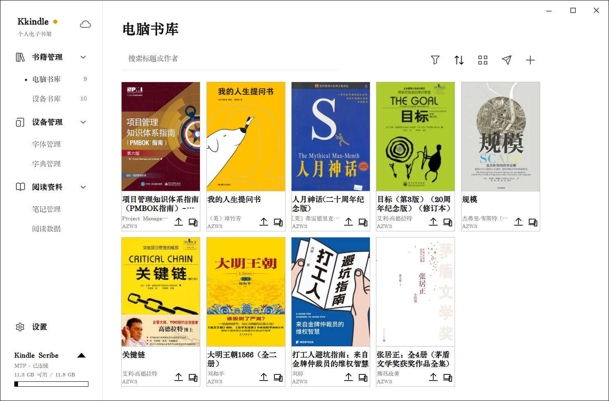

Kkindle 使用手册
Kkindle 把电子书书库、阅读器和 Kindle 设备管理放在同一个桌面应用里。本手册按操作顺序写：建立书库、导入书籍、阅读和做笔记、传到 Kindle，最后说明备份和换电脑的方法。

第一次使用：从零到读完一本书
- 打开官网下载页，按电脑系统选择安装包。Windows 有安装版和便携版；Linux 和 macOS 按下载页中的系统说明选择。
- 启动 Kkindle，在首次启动页面选择界面语言。Calibre 用于格式转换和 Kindle 词典导入；暂时不需要这些功能时可以跳过。
- 左侧选择“书籍管理 → 电脑书库”，点击工具栏添加按钮，选一本 EPUB、PDF、MOBI、AZW3 或 TXT。也可以把书籍文件拖入书库。
- 等导入完成，在书库中找到书卡并打开。阅读器会保存阅读进度；下次打开可以接着读。
- 需要传到 Kindle 时，先用 USB 连接并解锁设备，再打开“设备书库”，按Kindle 与传书中的步骤发送。
先记住这三件事
- 本地书库：书籍、封面、书库信息和阅读记录默认保存在本机。更换电脑前先导出
.kkindle备份，或按备份与同步配置云端同步。 - 联网功能：AI、在线发送和云端同步会连接各自配置的服务。使用前查看对应章节，确认发送目标和数据范围。
- 误删可恢复：删除书籍时可移入回收站；导入备份会替换当前书库，恢复前应先备份目标电脑上的数据。
按任务查找
找不到答案时，先查看常见问题。需要反馈问题，可到“设置 → 关于与更新”查看诊断或导出日志。